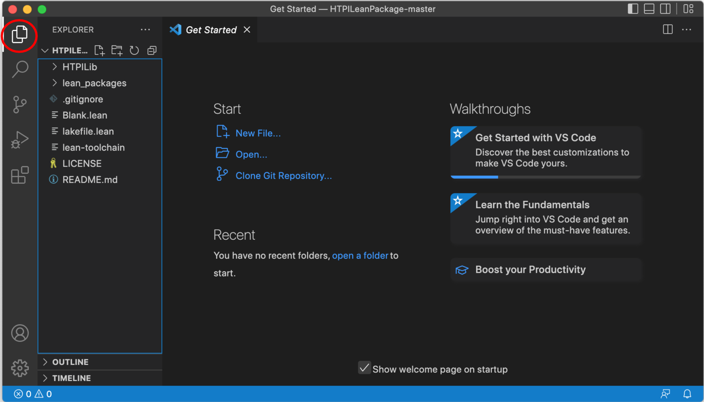
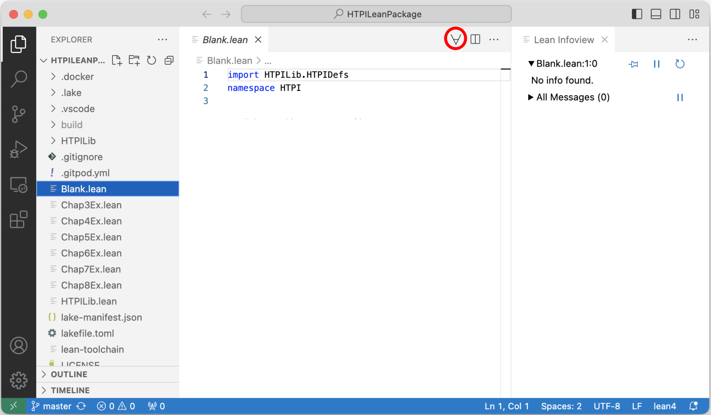

How To Prove It With Lean
Preface
About This Book
This book is intended to accompany my book How To Prove It (henceforth called HTPI), which is published by Cambridge University Press. Although this book is self-contained, we will sometimes have occasion to refer to passages in HTPI, so this book will be easiest to understand if you have a copy of HTPI available to you.
HTPI explains a systematic approach to constructing mathematical proofs. The purpose of this book is to show you how to use a computer software package called Lean to help you master the techniques presented in HTPI. Lean is free software that is available for Windows, MacOS, and Unix computers. To get the most out of this book, you will need to download and install Lean on your computer. We will explain how to do that below.
The chapters and sections of this book are numbered to match the sections of HTPI to which they correspond. The first two chapters of HTPI cover preliminary topics in elementary logic and set theory that are needed to understand the proof techniques presented in later chapters. We assume that you are already familiar with that material (if not, go read those chapters in HTPI!), so Chapters 1 and 2 of this book will just briefly summarize the most important points. Those chapters are followed by an introduction to Lean that explains the basics of using Lean to write proofs. The presentation of proof techniques in HTPI begins in earnest in Chapter 3, so that is where we will begin to discuss how Lean can be used to master those techniques.
If you are reading this book online, then at the end of the title in the left margin you will find a link to a pdf version of the book. Below that is a search box, which you can use to search for any word or phrase anywhere in the book. Below the search box is a list of the chapters of the book. Click on any chapter to go to that chapter. Within each chapter, a table of contents in the right margin lists the sections in that chapter. Again, you can go to any section by clicking on it. At the end of each chapter there are links to take you to the next or previous chapter.
About Lean
Lean is a kind of software package called a proof assistant. What that means is that Lean can help you to write proofs. As we will see over the course of this book, there are several ways in which Lean can be helpful. First of all, if you type a proof into Lean, then Lean can check the correctness of the proof and point out errors. As you are typing a proof into Lean, it will keep track of what has been accomplished so far in the proof and what remains to be done to finish the proof, and it will display that information for you. That can keep you moving in the right direction as you are figuring out a proof. And sometimes Lean can fill in small details of the proof for you.
Of course, to make this possible, you must type your proof in a format that Lean understands. Much of this book will be taken up with explaining how to write a proof so that Lean will understand it.
Installing Lean
We will be using Visual Studio Code to run Lean, so you will need to install VS Code first. VS Code is free and can be downloaded here.
You will also need the Lean package that accompanies this book, which can be downloaded from https://github.com/djvelleman/HTPILeanPackage. After following the link, click on the green “Code” button and, in the pop-up menu, select “Download ZIP”. Open the downloaded zip file to create a folder containing the HTPI Lean package. You can put this folder wherever you want on your computer.
Now open VS Code. You should see a window that looks something like this:

Click on the Extensions icon on the left side of the window, which is circled in red in the image above. That will bring up a list of available extensions:

In the Search Extensions in Marketplace field, type “lean4”. VS Code should find the Lean 4 extension and display it:

Click on “Install” to install the Lean 4 extension.
Next, in VS Code, select “Open Folder …” from the File menu and open the folder containing the HTPI Lean package that you downloaded earlier. Under the heading “Explorer” on the left side of the window, you should see a list of the files in the package. (If you don’t see the list, try clicking on the Explorer icon, circled in red below.)

Click on the file “Blank.lean” in the file list. You should see a warning that VS Code failed to start the ‘lean’ language server:

Click on the “Install Lean using Elan” button, and the Lean server should be installed. This may take a while, and there may be messages asking you to do things. If anything goes wrong, try quiting VS Code and restarting. Eventually your window should look like this:

If you don’t see the Infoview pane on the right side of the window, click on the icon circled in red in the image above, and the Infoview pane should appear.
Your installation is now complete.